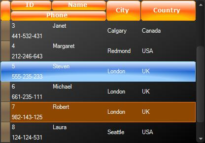

HTML View
The name of this view may lead to some confusion. __RadGridView__does not support html rendering, and there are no plans to support it. This view enables using row layout similar to the one existing in html tables. In fact, you can take an existing html table and use its html code in RadGridView. Sometimes this can save a lot of work. Just change the cell text to be the unique name of the desired column.

To use an html view we should instantiate HtmlViewDefinition and add the desired rows and cells:
[C#] Add rows and cells
HtmlViewDefinition view = new HtmlViewDefinition();
view.RowTemplate.Rows.Add(new RowDefinition());
view.RowTemplate.Rows.Add(new RowDefinition());
view.RowTemplate.Rows[0].Cells.Add(new CellDefinition("CustomerID"));
view.RowTemplate.Rows[0].Cells.Add(new CellDefinition("CompanyName"));
view.RowTemplate.Rows[0].Cells.Add(new CellDefinition("City"));
view.RowTemplate.Rows[0].Cells.Add(new CellDefinition("Country"));
view.RowTemplate.Rows[1].Cells.Add(new CellDefinition("Phone"));
[VB.NET] Add rows and cells
Dim view As New HtmlViewDefinition()
view.RowTemplate.Rows.Add(New RowDefinition())
view.RowTemplate.Rows.Add(New RowDefinition())
view.RowTemplate.Rows(0).Cells.Add(New CellDefinition("CustomerID"))
view.RowTemplate.Rows(0).Cells.Add(New CellDefinition("CompanyName"))
view.RowTemplate.Rows(0).Cells.Add(New CellDefinition("City"))
view.RowTemplate.Rows(0).Cells.Add(New CellDefinition("Country"))
view.RowTemplate.Rows(1).Cells.Add(New CellDefinition("Phone"))
The HtmlViewDefinition adds row and column spanning feature like in html table. This features enables
spanning cells across more than one column or row. To specify a column spanning, set the ColSpan
property of the CellDefinition:
[C#] Set column spans
view.RowTemplate.Rows[1].Cells[0].ColSpan = 2;
[VB.NET] Set column spans
view.RowTemplate.Rows(1).Cells(0).ColSpan = 2
The RowSpan property sets the row spanning:
[C#] Set row spans
view.RowTemplate.Rows[0].Cells[2].RowSpan = 2;
view.RowTemplate.Rows[0].Cells[3].RowSpan = 2;
[VB.NET] Set row spans
view.RowTemplate.Rows(0).Cells(2).RowSpan = 2
view.RowTemplate.Rows(0).Cells(3).RowSpan = 2
You have to set the Height property of the RowDefinition to change the row height:
[C#] Set row height
view.RowTemplate.Rows[0].Height = 40;
[VB.NET] Set row height
view.RowTemplate.Rows(0).Height = 40
Another way to specify the row layout is using html-like syntax:
Html Structure
Use the following code to load the definition:
[C#] Use html template
view.RowTemplate.ReadXml(@"..\..\GridView\ViewDefinitions\myViewDefinition.htm");
[VB.NET] Use html template
view.RowTemplate.ReadXml("..\..\GridView\ViewDefinitions\myViewDefinition.htm")
At the end simply set the ViewDefinitions property of RadGridView to the newly created ViewDefinition
[C#] Set the ViewDefinition property of RadGridView
radGridView1.ViewDefinition = view;
[VB.NET] Set the ViewDefinition property of RadGridView
RadGridView1.ViewDefinition = view
Now load the data in the RadGridView
[C#] Load the data
private void HTMLView_Load(object sender, EventArgs e)
{
this.customersTableAdapter.Fill(this.nwindDataSet.Customers);
}
[VB.NET] Load the data
Private Sub HTMLView1_Load(ByVal sender As System.Object, ByVal e As System.EventArgs) Handles MyBase.Load
Me.CustomersTableAdapter.Fill(Me.NwindDataSet.Customers)
End Sub